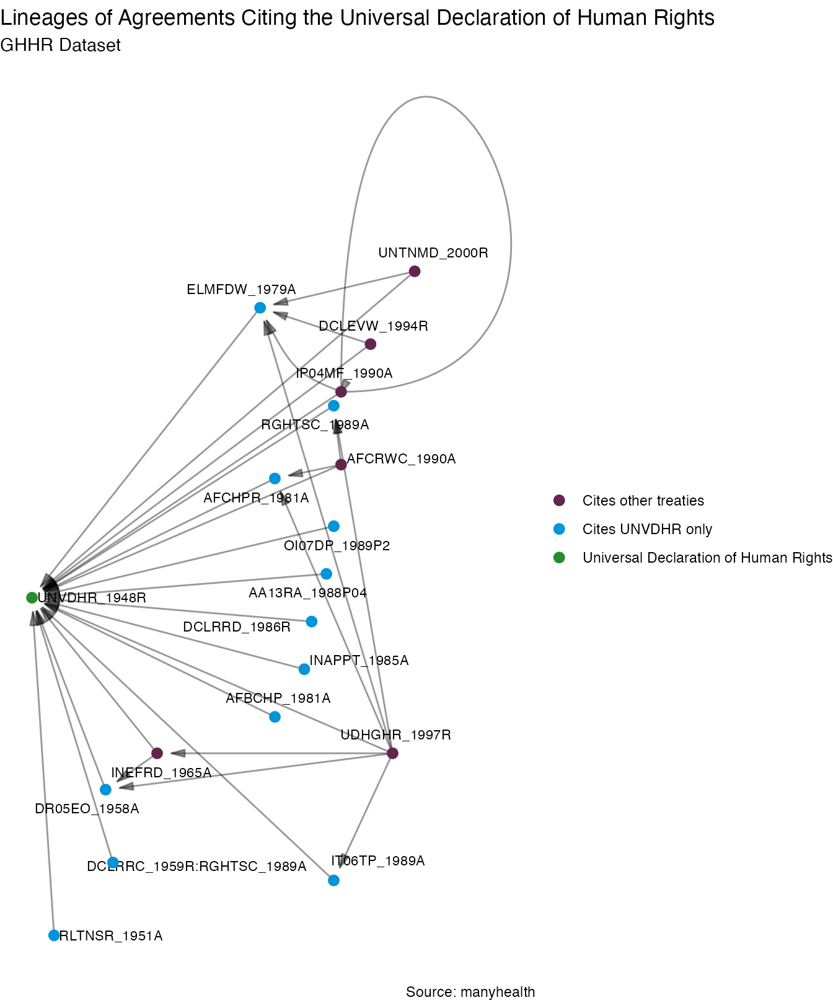

What Does Global Health Governance Look Like?
Esther Peev
2023-02-14
healthdata.RmdManyhealth Data
{manyhealth} package is composed of multiple databases,
each of them representing a different aspect of global health
governance.
Agreements
The agreements database is an ensemble of data on international health instruments. The combination of datasets that are contained in this database prints an overview of all international instruments that governs the global health sphere. With the agreements data, we can for example see all the health treaties signed in a specific year, or all WHO instruments adopted during a year.
library(dplyr)
library(knitr)
manyhealth::agreements$WHO[,c(1:5)] %>%
dplyr::filter(Beg == "2010") %>%
kable("html")| manyID | Title | Beg | Organisation | Topic |
|---|---|---|---|---|
| EM06SD_2010O3 | EMRC57R3 Maternal Child And Adolescent Mental Health Challenges And Strategic Directions 2010-2015 | 2010 | WHO Regional Committee for the Eastern Mediterranean | Resolutions and Declarations on Child & Youth |
| CDSUPH_2010R2 | Resolution CD50R2 Strategy On Substance Use And Public Health | 2010 | PAHO | Resolutions and Declarations on Alcohol and Substance Use |
| MA04DG_2010O:MA04DG_2010O | Monitoring Of The Achievement Of The Health-related Millennium Development Goals | 2010 | World Health Organization | Resolutions and Declarations on General Health |
| PRCNCD_2010O | Prevention And Control Of Non-communicable Diseases | 2010 | United Nations | Resolutions and Declarations on General Health |
| RMDGPD_2010O | Realizing The Millennium Development Goals For Persons With Disabilities | 2010 | United Nations | Resolutions and Declarations on Disability |
| WGRHUA_2010S | WHA6313 Global Strategy To Reduce The Harmful Use Of Alcohol | 2010 | World Health Organization | Resolutions and Declarations on Alcohol and Substance Use |
| manyID | Title | Beg | Region | LegalStatus |
|---|---|---|---|---|
| AMDRDM_1948R | American Declaration Of The Rights And Duties Of Man | 1948 | Americas | Intergovernmental - Non-binding |
| CHROAS_1948A | Charter Of The Organization Of American States (OAS) | 1948 | Americas | Intergovernmental - Legally Binding |
| PRVPCG_1948A | Convention On The Prevention And Punishment Of The Crime Of Genocide | 1948 | Universal | Intergovernmental - Legally Binding |
| UNVDHR_1948R | Universal Declaration Of Human Rights | 1948 | Universal | Intergovernmental - Non-binding |
manyhealth::agreements$HUGGO[,c(1:5)] %>%
dplyr::filter(messydates::year(Beg) == "1990") %>%
kable("html")| manyID | Title | Beg | Signature | Force |
|---|---|---|---|---|
| CG08IS_1990R15 | CEDAW General Recommendation No 15 Avoidance Of Discrimination Against Women In National Strategies For The Prevention And Control Of Acquired Immunodeficiency Syndrome (AIDS) | 1990-02-02 | 1990-02-02 | NA |
| CDGRFC_1999R14 | CEDAW General Recommendation No 14 Female Circumcision | 1990-02-03 | 1990-02-03 | NA |
| SUCWIC_1990A | Convention Concerning Safety In The Use Of Chemicals At Work (ILO Chemicals Convention 1990 (No 170)) | 1990-06-25 | 1990-06-25 | 1993-11-04 |
| NGWINW_1990A | Convention Concerning Night Work (ILO Night Work Convention 1990 (No 171)) | 1990-06-26 | 1990-06-26 | 1995-01-04 |
| AFCRWC_1990A | African Charter On The Rights And Welfare Of The Child | 1990-07-01 | 1990-07-01 | 1999-11-29 |
| CP04RW_1990A | Code Of Practice On The International Transboundary Movement Of Radioactive Waste | 1990-09-21 | 1990-09-21 | NA |
| CRCSDC_1990R | Caracas Declaration | 1990-11-14 | 1990-11-14 | NA |
| GRCPDF_1990R | Guidelines For The Regulation Of Computerized Personal Data Files | 1990-12-14 | 1990-12-14 | NA |
| UN04DL_XXXXR | United Nations Rules For The Protection Of Juveniles Deprived Of Their Liberty | 1990-12-14 | 1990-12-14 | NA |
| IP04MF_1990A | International Convention On The Protection Of The Rights Of All Migrant Workers And Members Of Their Families (ICRMW) | 1990-12-18 | 1990-12-18 | 2003-07-01 |
Organizations
The Organizations database lists different actors playing a role in the global health governance, such as NGOs, IGOs or associations with their date of establishment and headquarter location. For example, the table below shows the organizations that are based in London.
library(dplyr)
library(knitr)
manyhealth::organizations$CHATHAM %>%
dplyr::filter(City == "London") %>%
kable("html")| organizationID | Organization | Beg | City | State | Type | Health_as_primary_intent |
|---|---|---|---|---|---|---|
| LSH | London School Of Hygiene And Tropical Medicine | 1975-03-15 | London | UK | 9 | Yes |
| SCI | Save The Children International | 1975-04-04 | London | UK | 6 | No |
| IPP | International Planned Parenthood Federation | 1975-05-07 | London | UK | 6 | No |
| ISD | International Society Of Drug Bulletins | 1975-06-10 | London | UK | 6 | No |
| EJA | Elton John AIDS Foundation | 1975-06-16 | London | US | 6 | Yes |
| IFF | International Finance Facility For Immunisation | 1975-06-30 | London | UK | 6 | Yes |
References
The References database was hand coded from TEXTS and identifies which treaties cite other treaties. With this information we can, for example, get to treaty lineages. The code below illustrates how to extract sample of treaties from the references database and how we can use {migraph} to plot treaties that cite to other treaties. The dataset selected to this end, GHHR_REF, also includes agreements on human rights.
library(dplyr)
library(ggplot2)
library(migraph)
# Get dataset
references <- manyhealth::references$GHHR_REF %>%
dplyr::distinct() %>%
dplyr::mutate(year = stringr::str_extract(Treaty2, "[:digit:]{4}")) %>%
dplyr::filter(RefType == "Cites") %>%
dplyr::arrange(year)
# Plot with migraph
migraph::gglineage(references[75:100,c(1,2,3)]) +
labs(title = "Treaty Lineage of Selected Agreements from GHHR Dataset",
caption = "Source: manyhealth") +
theme(plot.title = element_text(family = "sans",
size = 18,
hjust = 0.5))
#>
#> The downloaded binary packages are in
#> /var/folders/24/8k48jl6d249_n_qfxwsl6xvm0000gn/T//RtmpXPfXr8/downloaded_packages
The second graph below illustrate lineages between a sample of treaties from World Health Organization (WHO) dataset. It is mostly resolutions, decisions and conventions adopted under the auspice of WHO.
library(dplyr)
library(ggplot2)
library(migraph)
# Get dataset
references <- manyhealth::references$WHO_REF %>%
dplyr::distinct() %>%
dplyr::mutate(year = stringr::str_extract(Treaty2, "[:digit:]{4}")) %>%
dplyr::filter(RefType == "Cites") %>%
dplyr::arrange(year)
# Plot with migraph
migraph::gglineage(references[10:35,c(1,2,3)]) +
labs(title = "Treaty Lineage of Selected Agreements from WHO",
caption = "Source: manyhealth") +
theme(plot.title = element_text(family = "sans",
size = 18,
hjust = 0.5))
For more information on how to read the manyID, please read the vignette
from {manypkgs} package. For more information on some of
our other “many” packages, please see manydata.